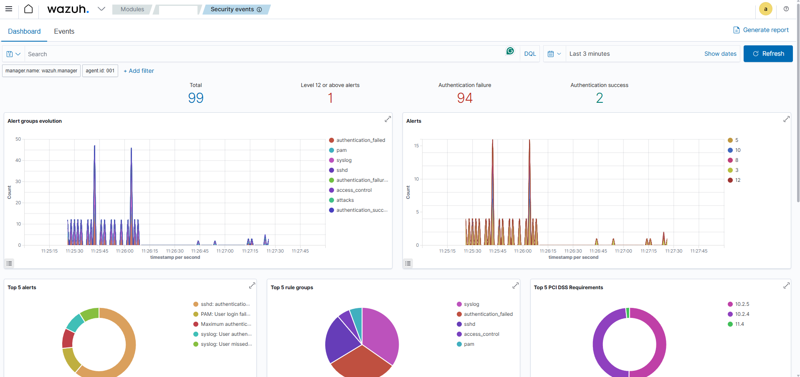

Centralized SIEM & Intrusion Detection System
Engineered a unified threat detection pipeline by deploying a Wazuh SIEM Manager integrated with a Suricata Network Intrusion Detection System, aggregating host and network telemetry into a single pane of glass.

How It Works
Deployed Wazuh SIEM Manager as the central log aggregation and alerting engine using Docker Compose
Integrated Suricata NIDS for real-time network packet analysis and signature-based threat detection
Installed HIDS agents across multiple OS architectures (Ubuntu amd64, Raspberry Pi aarch64) for cross-platform endpoint visibility
Correlated authentication failures (auth.log) and network events (eve.json) to map active threats against the MITRE ATT&CK framework
Tools & Technologies
Key Outcomes
Achieved full network and endpoint visibility by correlating NIDS and HIDS telemetry in a unified SIEM dashboard
Successfully mapped detected threats to MITRE ATT&CK techniques for structured incident analysis
Eliminated blind spots across heterogeneous operating systems and hardware architectures